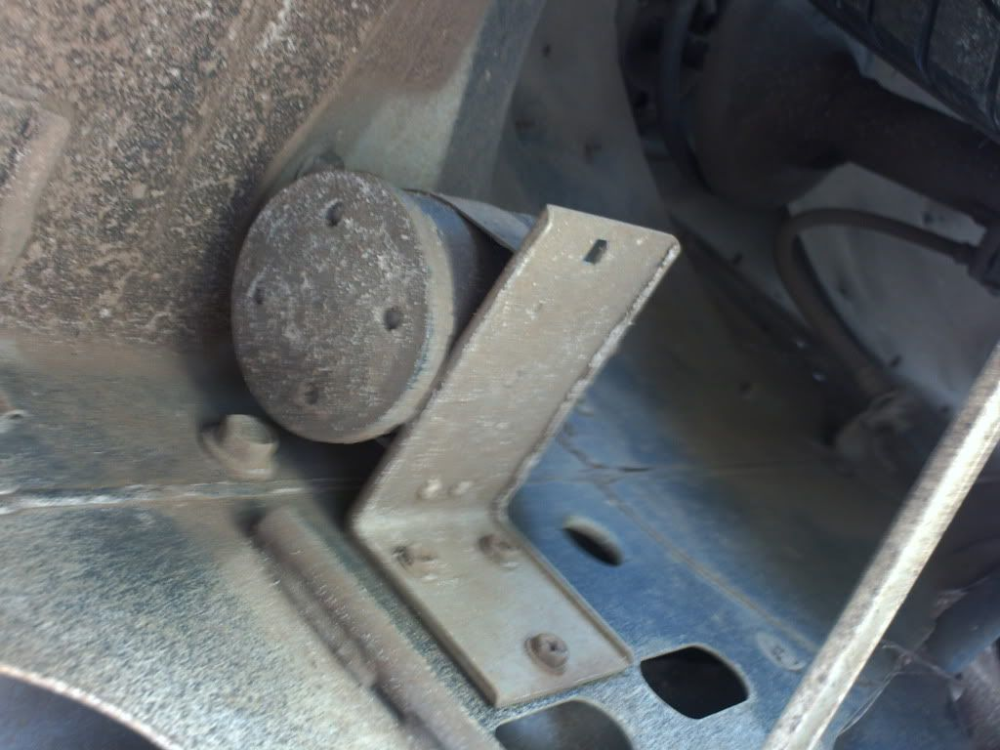
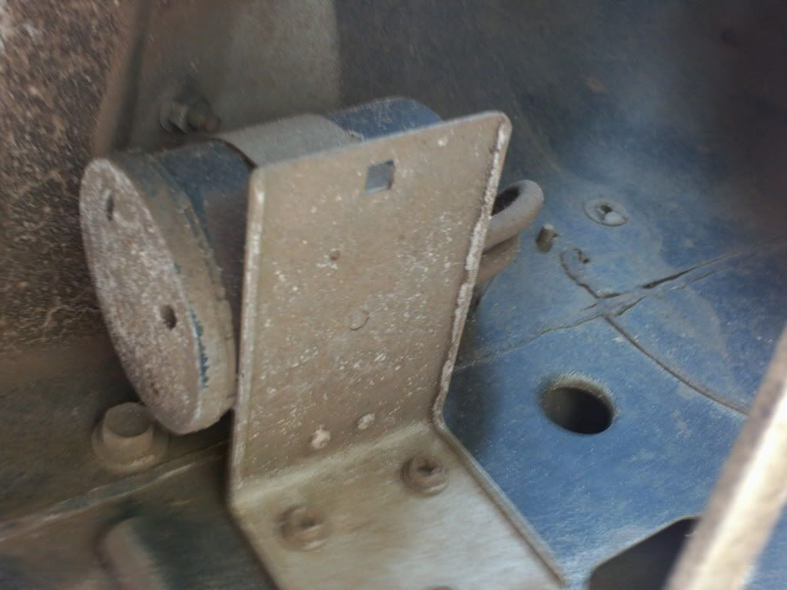
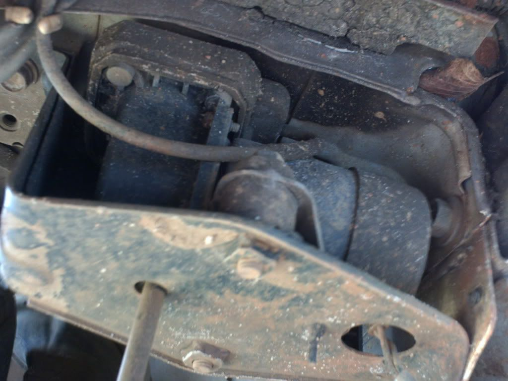
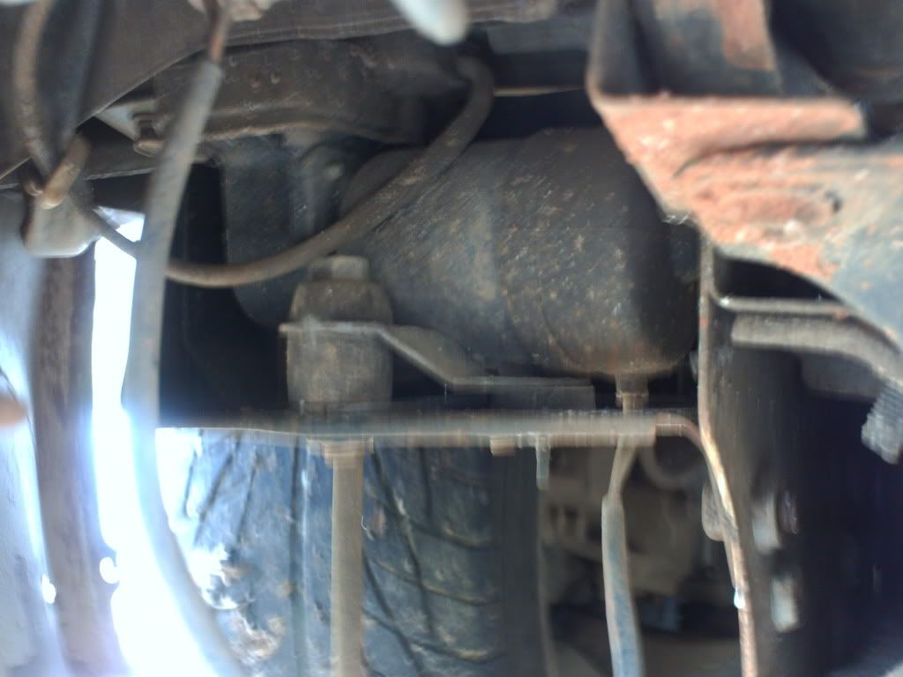

-
Like the title says, I've been wondering for awhile what these 2 devices are and what exactly their function/s are. Almost forgot, the car is a Shiro.
The first once pictured is located in the front driver's side tire well, let's call it #1:


This one is located in the front passenger's side tire well, let's call it #2:


I figured this belonged in the noob section, and I tried searching but I don't even know what to search for on these 2 unknown devices. If anyone can shed light on what they are called and their function/s that would be awesome.Shiro #93
Mods: A/C Removal, Custom Lightweight W-series crank pulley, K&N Air Filter, Electric Fan, EGR/AIV/CC removal -
i think #1 is a vacuum surge tank and #2 is a vacuum pump.

1988 300zxt. gt35, stance, etc. Wheels: Varrstoen ES2 18x9.5 et-13 225/40. 18x10.5 et0 245/40
1990 jetta vr6'd -
ThisDeleriousZ wrote: i think #1 is a vacuum surge tank and #2 is a vacuum pump.Bolt on, fast, z31. You can only pick two.
Old weaksauce numbers: 391hp/433tq

-
Do you have a Factory Service Manual(FSM)? A "must have" if you're gonna be working on your SS.Shiro #443

-
Alright just looked in the HA section of the 88 FSM, and found the the vacuum pump :super . So the vacuum pump is related to A/C. I have gotten rid of my A/C, so would that mean that I could also get rid of this too?
Had not found the vacuum surge tank in the FSM yet, idk if it is related to the A/C or not. Anybody removed these devices before? Because if I don't need them then I'll just yank them out and set them aside somewhere.Shiro #93
Mods: A/C Removal, Custom Lightweight W-series crank pulley, K&N Air Filter, Electric Fan, EGR/AIV/CC removal -
You don't need either one if you removed the A/C.
Do you wanna sell me the vacuum surge tank ? I need one since I'm gonna get my A/C working again.Shiro #443
-
Thanks for all the input guys.
Rick, I would sell you it, but I'm holding on to all my A/C stuff bc I know that one day I'm gonna want to put it back in. Shiro #93
Shiro #93
Mods: A/C Removal, Custom Lightweight W-series crank pulley, K&N Air Filter, Electric Fan, EGR/AIV/CC removal -
michellin pilot sport a/s tires? -
Lol, no they're Falkens. Not sure on the subname, I'd have to go out and look at them.Careless wrote: michellin pilot sport a/s tires?
Anyways, I was thinking. Since I took out my A/C and don't necessarily need those 2 devices, do the 2 devices affect my Heater any? I don't have A/C but I do want to keep my Heater.Shiro #93
Mods: A/C Removal, Custom Lightweight W-series crank pulley, K&N Air Filter, Electric Fan, EGR/AIV/CC removal -
You still need the vacuum pump if you want to be able to have anything other than heat through the defrost vents.BLOZ UP.com
It is not recommended to confirm proper installation by driving into walls or other barriers as this could cause personal injury or damage to the vehicle. -
Ok, so you're saying the pump is needed if I wanna be able to use just the vent (non A/C air)? And with or without the pump I can still have heated air?BLOZ UP wrote: You still need the vacuum pump if you want to be able to have anything other than heat through the defrost vents.
Sorry about all the questions, just trying to get all the info straight. What I want is to still have the regular outside vent air and be able to have heated air.Shiro #93
Mods: A/C Removal, Custom Lightweight W-series crank pulley, K&N Air Filter, Electric Fan, EGR/AIV/CC removal -
The vent switches are vacuum powered, as is the temperature mixture switch.BLOZ UP.com
It is not recommended to confirm proper installation by driving into walls or other barriers as this could cause personal injury or damage to the vehicle. -
Does anyone know how removing the vacuum pump relay located on the passenger side strut tower near the relay box would affect the use of the heating system?
-
Are you pointing at the headlight sensor?BLOZ UP.com
It is not recommended to confirm proper installation by driving into walls or other barriers as this could cause personal injury or damage to the vehicle. -
+1BLOZ UP wrote: Are you pointing at the headlight sensor?- VG30DET (HE341) 86 300ZX - 1982 280ZX Turbo - Headered NA 1986 300ZX 2+2 - 2000 Xterra -

Copyright © 2006–. All rights reserved. Privacy Policy